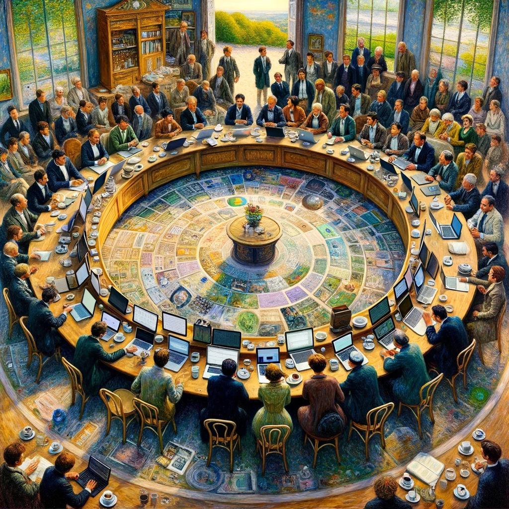
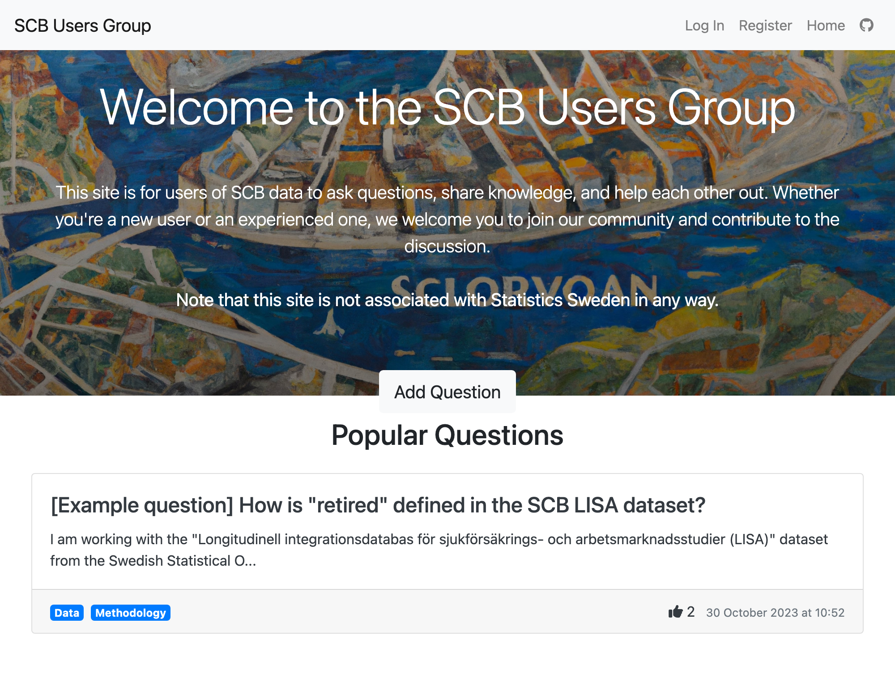

A modern question and answer site: SCB Users Group
A post about creating a question and answer site for users of Statistics Sweden data
Introduction
Long email chains are a mess to search through. Researchers grappling with Statistics Sweden (SCB) datasets often exchange insights that vanish into inboxes only accessible to those in the email chain. We are building the SCB Users Group to change that. It’s a platform where shared questions yield communal answers, accessible to everyone online.

Our Approach
The concept is simple: think StackOverflow, but with a focus on SCB data. Researchers ask, answer, and, in the process, craft a self-sustaining knowledge base.
We have built an alpha version and are looking to get a small amount of money for a custom domain and hosting costs.
The current version of the site is accessible here. I include a screenshot of the homepage below.

Technical Underpinnings
We chose Google Firebase Firestore for its simple storage and Firebase for authentication. The upshot? A secure, efficient backend without the headache of password management or the risk of exposing passwords inadvertently. There is also a generous free tier offered for storage on Firebase.
The Firestore nosql database has a simple set up with a collection for users with a unique id, usernames and emails. The questions collection has a unique id for each question, the information pertaining to each question like title and body and date, as well as a subcollection for the number of upvotes and id of the user who upvoted to prevent multiple upvotes from the same user. Each answer to the question belongs to a sub collection of the question called ‘answers’ in the nosql database.
Frontend Innovation
SvelteKit powers our frontend; its dynamic nature is perfect for crafting reactive user interfaces. SvelteFire slots let us tailor content based on user status, enhancing interaction without clutter.
For example, compare the below in which logged in users can upvote questions and answers and add the their own answers with the view of logged out users who can just view the content.
User-Centric Design
The interface is intuitive. If you’re logged in, you’re part of the conversation. If not, you’re still in the know.
Deployment Strategy
Netlify hosts our site, chosen for its scalability and future-proofing abilities. It’s a platform that grows with us, promising smooth custom domain integration down the line.
Next Steps
Markdown rendering is next on our list. It’s about enriching the discourse with equations, links, and well-formatted content.
A Note on Development
Our secret weapon during development? ChatGPT-4 vision. It’s a tireless coding partner, turning visual and textual prompts into Svelte components that click into place. Iterating is swift.
Contribute
The project is public on GitHub in this repo. Feel free to add a comment in the discussions tab with a suggestion about how we can improve before launch.